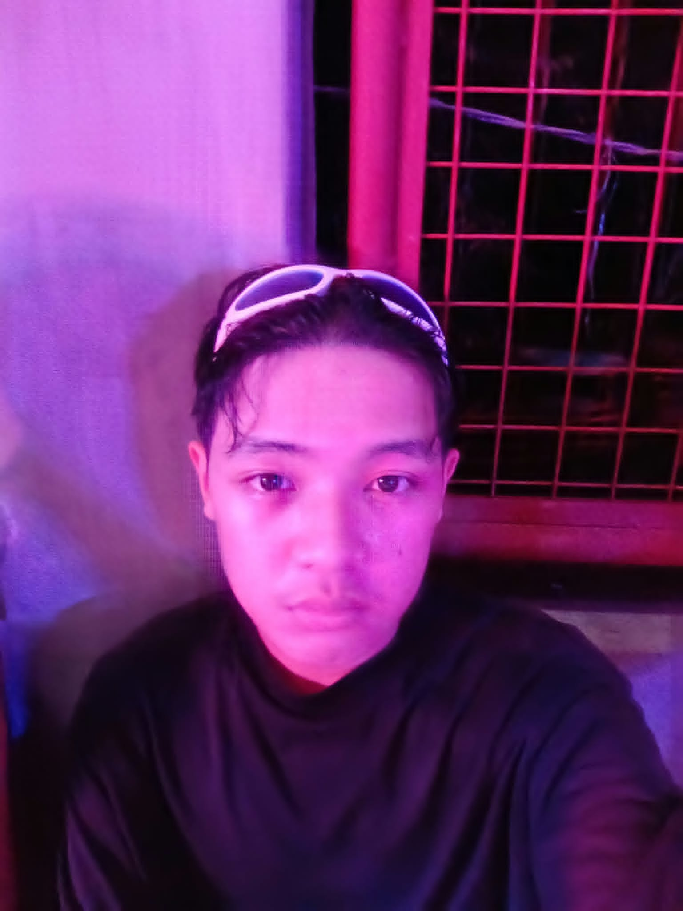

About Me

Hello! My name is Razzel Atuli. I am a first-year BSCS student at Bicol University. I am from Mariawa, Legazpi City. I chose BSCS because of the influence in social media it's not really my first choice but I really enjoy Computer Science right now. I hope to learn more about programming and web development in the future.
My Hobbies and Goals
Hobbies
- Reading manga/manhwa
- Playing video games
- Listening to music
My Top 3 Goals
- Finish my degree
- Be a successful software developer
- Live life to the fullest
My Class Schedule
| Subject | Day | Time |
|---|---|---|
| CS 101: Introduction to Computing | Wednesday | 9:00 AM - 12:00 PM |
| CS 102: Computer Programming | Monday,Wednesday | 4:00 PM - 7:00 PM |
| Phys 1: Physics for Computing | Tuesday, Thursday | 1:00 PM - 2:30 PM |
| Math 101:Mathematical Analysis | Tuesday, Thursday, Friday | 2:30 PM - 4:00 PM, 1:00 PM - 3:00 PM |
| GEC 11: Understanding the Self | Friday | 9:00 AM - 12:00 PM |
| PATHfit 1 | Saturday | 4:00 PM - 6:00 PM |
| NSTP: ROTC | Sunday | 7:00 AM - 12:00 PM |
My Favorites
One website I enjoy visiting is listed below because it has all the music I love in one place.